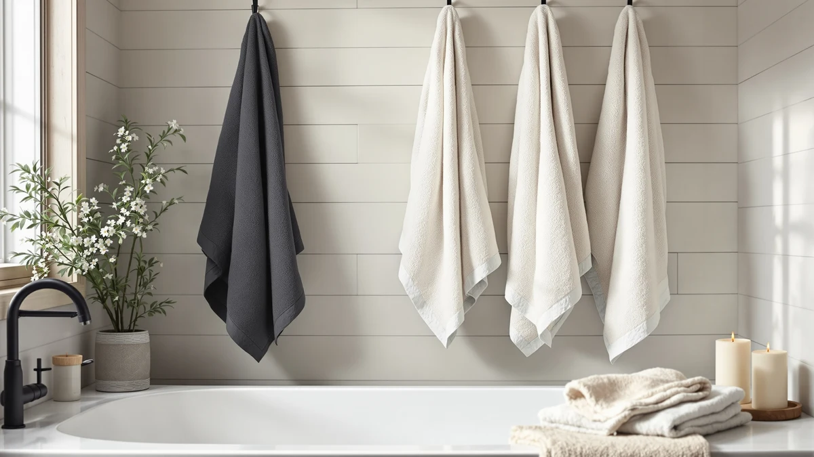

Best Bath Towels for Humid Climate (2026)
Prices and picks verified as of October 2026. Independent, reader-supported reviews.


Quick Answer
The best bath towels for humid climate bathrooms are mid-weight or lighter cotton sets, not the thickest plush ones, because a dense pile holds water longer and takes more time to air out when humidity sits above 60 percent. After comparing seven cotton and microfiber sets on weave, weight, and how fast owners say they dry, the White Classic Luxury White Bath Towel Set is our pick at $35.99.
Our pick: Luxury White Bath Towel Set, $35.99 Check Price on Amazon
Bottom line: our top pick is the Luxury White Bath Towel Set of 8 Pieces - 100% Turkish Cotton at $39.99. The best budget option is the Utopia Towels 8 Piece Luxury Towel Set at $29.99.
Things to Know Before You Buy
- Weight works against you in humid air. A heavier, denser pile holds more water and takes longer to air dry without a fan or open window, which matters more than it does in a dry climate.
- Weave changes dry time more than price does. Ring-spun cotton and Turkish weaves dry faster than dense terry loops, while microfiber dries fastest of all but feels less plush.
- A damp towel left on the bar can smell musty within a day or two. In humid climates, airflow around the towel matters as much as how often you wash it.
- Lighter colors show mildew spotting sooner. White and pastel towels reveal early moisture damage faster than mid-tone or darker ones, even though the fabric itself is no more prone to it.
- Full sets cost more upfront but save laundry trips. An 8-piece set keeps a rotation ready between washes, which helps in climates where you wash towels more often to stay ahead of odor.
The best bath towels for humid climate bathrooms are not necessarily the thickest or most luxurious ones on the shelf, because the same dense pile that feels great in a dry bathroom can stay damp for a day or more where humidity sits above 60 percent. Florida, the Gulf Coast, and any bathroom with limited ventilation put a towel's weave to the test in a way a dry climate never does.
We compared seven cotton and microfiber towel sets on weight, weave, and how fast owners say each one dries between showers in sticky, humid conditions. The White Classic Luxury White Bath Towel Set came out as our pick for most humid bathrooms at $35.99, because its mid-weight cotton loops balance absorbency with a weave that airs out faster than heavier plush sets. If you want the fastest possible dry time and don't mind a flatter feel, the NALIVO microfiber set is worth a look instead.
Your pick still depends on your bathroom's airflow and how many people share one towel bar. Below, you'll find the strengths and honest drawbacks of all seven towels, so you can match the right weight and weave to a humid climate instead of guessing.
Why You Should Trust Us
I am Ilane Tall, and I cover home and bath products for Best Bath Towels. I spend my days reading product specs, comparing fiber and weave claims against what owners report after months of use, and sorting the towels that hold up from the ones that disappoint by the third wash. For this guide to the best bath towels for humid climate bathrooms, I focused on a question that owners in sticky, coastal, or poorly ventilated bathrooms ask most: does the towel dry out between uses, or does it stay damp and start to smell?
I do not run a fake testing lab or invent expert quotes. The judgments here come from the documented materials and weights of each towel, the patterns in verified buyer reviews, and the basic physics of how pile depth and fiber type affect evaporation. Where a towel has a real weakness, you will read about it.
How We Picked
I started by sorting towels by weave and weight, since those two factors matter more than price when you're shopping for the best bath towels for humid climate use. I included dense 100% cotton sets, a lighter Turkish weave, and a microfiber option so the list covers a real range of dry times instead of a range of price points alone.
I weighed how each towel handles what works against it in humid air: pile depth, fiber type, and whether owners report a towel staying fresh or developing a musty smell between washes. Towels that only come as thin novelty pieces, or that owners widely report shedding heavily, dropped down the list or moved to The Competition.
How We Compared
I assessed each towel the way you would judge bath towels for a humid climate at home. I weighed the fiber and loop density against the towel's advertised weight, since a denser, taller pile holds more water and needs more time to release it. I read through verified buyer reviews for repeated mentions of fast or slow drying, musty odor after a few days of use, and how the towel held up to frequent washing, and I gave the most weight to patterns that showed up across dozens of owners rather than one-off complaints.
I also factored in ventilation. A towel that dries quickly on a bar near an open window behaves differently in a windowless bathroom with a closed door, so the comparisons here call out which picks need airflow and which ones tolerate a more closed-in space. The result is a ranking based on how these towels behave over weeks of humid, real-world bathroom use, not a single dry afternoon.
Our Picks

Luxury White Bath Towel Set
What we like
- Full 8-piece set matches bath towels, hand towels, and washcloths
- Ring-spun cotton loops absorb quickly without feeling overly dense
- Verified buyers rate it 4 out of 5 after repeated washing
Flaws but not dealbreakers
- Cycling a full 8-piece set through the wash takes longer in a one-bathroom household
- White fabric shows mildew spotting sooner than a darker towel if left damp
| Material | 100% cotton |
| Size | 8 Pieces Towel Set |
The Luxury White Bath Towel Set from White Classic is our pick for most humid bathrooms because its 100% cotton construction sits in the middle ground that climate rewards. The loops are dense enough to pull water off your skin in a few passes, but the weave is not so thick that it traps moisture the way an oversized plush towel does. At $35.99 for eight pieces, including two bath towels, two hand towels, and four washcloths, you get a full rotation for one bathroom without buying separate sets for showers, hands, and face.
Owners who rate it 4 out of 5 consistently mention that the set holds up through repeated washing without turning stiff or scratchy, which matters in a humid climate where you wash towels more often to stay ahead of musty smells. The main tradeoff is color. White shows the first signs of mildew spotting faster than a mid-tone towel, so pull it fully flat to dry after each use rather than leaving it balled up on a hook.

American Soft Linen Luxury 6
What we like
- Six-piece set covers two bath towels, two hand towels, and two washcloths
- Soft ring-spun cotton feels noticeably plusher than our top pick
- Rated 4 out of 5 by verified buyers
Flaws but not dealbreakers
- Heavier pile than the White Classic set, so it needs a fan or open window to dry fully in humid air
- Takes longer to dry on a closed-door towel bar without ventilation
| Material | 100% cotton |
| Size | 6 Pc Towel Set |
American Soft Linen built this 6-piece set around plushness, and it shows the moment you pick one up. The ring-spun cotton is noticeably thicker and softer against skin than the lighter sets in this guide, which is exactly what makes it worth the tradeoff for the right bathroom. At $39.99 for two bath towels, two hand towels, and two washcloths, it covers a couple's daily rotation without stretching into bulk territory.
That extra density is also the catch in a humid climate. A thicker pile holds more water, and it needs real airflow, a fan, an open window, or at least a well-ventilated bathroom, to dry at the same pace as a lighter towel. Verified buyers rate it 4 out of 5 and consistently praise the feel, so if your bathroom already has decent ventilation, the plushness is worth the extra drying time it asks for.

Utopia Towels 8 Piece Luxury
What we like
- Lowest price per piece of any 8-piece set in this guide
- 100% cotton construction absorbs well for the price
- Rated 4 out of 5 by verified buyers
Flaws but not dealbreakers
- Thinner weave than the premium sets, so it shows wear sooner with heavy use
- Still benefits from airflow to avoid a musty smell between washes
| Material | 100% cotton |
| Size | 8 Pieces Towel Set |
Utopia Towels prices this 8-piece set at $29.99, the lowest cost per piece of any full set in this guide, without dropping down to a synthetic blend to get there. You still get two bath towels, two hand towels, and four washcloths in 100% cotton, which covers a household's daily rotation the same way the pricier White Classic set does.
The tradeoff shows up in how the weave feels and holds up over time. It is thinner than the premium sets here, so it absorbs a bit less per pass and wears faster with heavy daily use, but that same lighter weight means it still airs out at a reasonable pace in a humid bathroom. Verified buyers rate it 4 out of 5 and generally call it solid value for a starter set or a guest bathroom.

American Soft Linen Luxury 4
What we like
- Standard 27x54 inch sizing fits most closets and towel bars
- Four-piece set from the same soft cotton as the brand's larger set
- Rated 4 out of 5 by verified buyers
Flaws but not dealbreakers
- No hand towels or washcloths included, only the bath towels
- Still a mid-weight pile, so it benefits from airflow between uses
| Material | 100% cotton |
| Size | 27x54" Bath Towel Set |
American Soft Linen's 4-piece set sticks to standard 27x54 inch bath towels instead of the extra-large sizing some brands push. For a smaller bathroom, a guest room, or a closet with limited shelf space, that standard size is easier to store and launder than oversized towels, and at $35.96 you get four of them in the same ring-spun cotton as the brand's bigger set.
Because the construction matches the pricier 6-piece set from the same brand, the drying behavior is similar: a solid, absorbent cotton towel that does best with some airflow in a humid bathroom rather than a sealed, windowless one. Buyers rate it 4 out of 5 and tend to buy it specifically because they wanted bath towels only, without paying for hand towels and washcloths they do not need.

NALIVO Extra Large Bath Towel
What we like
- Microfiber construction dries faster than any cotton set here
- Extra-large sizing wraps around adults fully
- Lightweight fabric wrings out and dries between showers with ease
Flaws but not dealbreakers
- Feels less plush and less absorbent per pass than cotton
- Some owners describe the hand feel as more athletic than spa-like
| Material | Microfiber |
| Size | 6Piece Towel Set |
The NALIVO set is the one towel in this guide built from microfiber instead of cotton, and that fiber choice is the entire point. Microfiber sheds water fast and holds far less of it than cotton loops do, which means this extra-large set dries on the bar well ahead of any of the cotton sets here. At $47.58 for six pieces, it costs more than the cotton options, but in a bathroom with no ventilation or in a year-round tropical climate, that faster dry time can matter more than price.
The honest tradeoff is feel. Microfiber does not hold water the way cotton does, so each pass across your skin moves less moisture than a cotton towel of the same size, and the texture reads as smoother and less plush than ring-spun cotton. If you specifically want the fastest-drying towel on this list and can live with a less luxurious hand feel, this is the pick.

Cotton Paradise 100% Cotton Turkish
What we like
- Turkish cotton weave is lighter than classic plush terry
- Dries faster than the denser sets while staying 100% cotton
- Rated 4 out of 5 by verified buyers
Flaws but not dealbreakers
- Feels flatter and less plush than the heavier American Soft Linen set
- 6-piece set is smaller than the 8-piece options in this guide
| Material | 100% cotton |
| Size | 6 Piece Towel Set |
Cotton Paradise builds this set from a Turkish cotton weave, which is flatter and lighter than the classic plush terry used in most of the other picks here. That structural difference is the reason it belongs in a humid-climate guide: the fabric has less bulk to hold water in, so it releases moisture and airs out faster than a dense, fluffy towel of the same material.
You give up some of the sink-in plushness that a heavier towel offers, and at six pieces for $39.99 you get a smaller set than the 8-piece options at a similar price. Verified buyers rate it 4 out of 5 and frequently mention that it feels lighter in hand while still soaking up water well, which fits a Turkish weave's reputation for balancing absorbency with a quicker dry.

Tens Towels Pack of 4
What we like
- Thin, ringspun cotton weave dries noticeably faster than a thick plush towel
- Large 30 by 60 inch size covers adults fully despite the thinner fabric
- Owners report it resists musty smell better than their previous towels when washed regularly
Flaws but not dealbreakers
- Feels thinner and less cushioned than a classic plush towel
- Pack of 4 bath towels only, no hand towels or washcloths included
| Material | 100% cotton |
| Size | 30 X 60 Inches |
Tens Towels markets this pack specifically on quick drying, and the thin, ringspun cotton weave backs that up. There is noticeably less fabric bulk here than in a thick plush towel, which means less water gets trapped in the first place and less needs to evaporate afterward. At $35.99 for four towels sized 30 by 60 inches, it is priced in line with the other mid-tier sets while targeting humid-climate owners directly.
Reviewers who live in humid or coastal areas consistently note that it holds up better against musty odor than the heavier towels they used before, as long as they keep washing it on a normal schedule rather than skipping cycles. The tradeoff is feel: this is a thinner, less cushioned towel than the American Soft Linen sets, and it only comes as bath towels, with no matching hand towels or washcloths in the pack.
Quick Comparison
| Product | Material | Price | Rating | Best for | Get it |
|---|---|---|---|---|---|
| Luxury White Bath Towel Set | 100% cotton | $35.99 | 4 | Full set, balanced dry time | View on Amazon → |
| American Soft Linen Luxury 6 | 100% cotton | $39.99 | 4 | Plush feel, needs airflow | View on Amazon → |
| Utopia Towels 8 Piece Luxury | 100% cotton | $29.99 | 4 | Budget-friendly 8-piece set | View on Amazon → |
| American Soft Linen Luxury 4 | 100% cotton | $35.96 | 4 | Compact 27x54 set | View on Amazon → |
| NALIVO Extra Large Bath Towel | Microfiber | $47.58 | 4 | Fastest dry time | View on Amazon → |
| Cotton Paradise 100% Cotton Turkish | 100% cotton | $39.99 | 4 | Lightweight Turkish weave | View on Amazon → |
| Tens Towels Pack of 4 | 100% cotton | $35.99 | 4 | Mildew-resistant weave | View on Amazon → |
What type of bath towel dries fastest in a humid climate?
Lighter-weight ring-spun cotton and Turkish weaves dry faster than dense, heavy plush towels, and microfiber dries fastest of all.
Do thicker towels take longer to dry in a humid bathroom?
Yes.
The Competition
A few towel categories did not make our list of the best bath towels for humid climate bathrooms, and the reasons usually come down to weave and fiber rather than price.
Ultra-heavy hotel-style towels, the kind marketed on gram weight alone at 700 GSM or more, feel impressive in a store but hold far more water than any pick in this guide. Owners in humid climates who try them often report a towel that never fully dries between showers without dedicated ventilation. We left them off because that density works against the one job this guide cares about.
Cotton-polyester blends sometimes undercut these picks on price, but the polyester content lowers absorbency and can trap moisture against the surface instead of releasing it. We stuck to 100% cotton and one dedicated microfiber option rather than a blend that compromises on both ends.
Decorative jacquard and novelty-weave towels look good hanging on a rack, but buyers frequently report heavy shedding and loft loss within months, and a thinning towel absorbs less over time. For a humid climate, where you are already washing towels more often, a towel that degrades fast adds laundry rather than solving a drying problem.
Among the best bath towels for humid climate use that we compared, the White Classic Luxury White Bath Towel Set is the pick for most people at $35.99, while the NALIVO microfiber set wins if dry time matters more to you than plushness. Give whichever set you choose room to breathe on the bar, and you will get the performance the fiber is capable of.
What these prices have actually done
We check the price of every product on this page every hour and keep the record. These figures are observations, not estimates or forecasts.
- Luxury White Bath Towel Set of 8 Pieces has ranged from $35.99 to $39.99 across 313 hourly price checks since June 6, 2026. It was $39.99 at the last check.
- American Soft Linen Luxury 6 Piece Towel Set has ranged from $32.29 to $39.99 across 315 hourly price checks since June 6, 2026. It was $39.99 at the last check.
- Utopia Towels 8 Piece Luxury Towel Set – Majestic Plush has ranged from $22.79 to $37.99 across 311 hourly price checks since June 6, 2026. It was $29.99 at the last check.
- American Soft Linen Luxury 4 Piece Bath Towel Set has ranged from $33.99 to $39.99 across 314 hourly price checks since June 6, 2026. It was $35.96 at the last check.
- NALIVO Extra Large Bath Towel Set of 6 (40"x80") has ranged from $41.78 to $55.98 across 313 hourly price checks since June 6, 2026. It was $55.98 at the last check.
- Cotton Paradise 100% Cotton Turkish Towel Set has ranged from $33.99 to $39.99 across 313 hourly price checks since June 6, 2026. It was $39.99 at the last check.
Last updated October 26, 2026. Amazon prices change constantly; the figure you see on Amazon right now is the one that counts.
Frequently Asked Questions
What type of bath towel dries fastest in a humid climate?
Lighter-weight ring-spun cotton and Turkish weaves dry faster than dense, heavy plush towels, and microfiber dries fastest of all. The NALIVO microfiber set in this guide airs out quicker than any of the cotton sets, while the Cotton Paradise Turkish towels trade a little plushness for a flatter weave that releases moisture sooner than a deep-pile set.
Do thicker towels take longer to dry in a humid bathroom?
Yes. A thicker, denser pile holds more water per pass, which is part of why it feels so absorbent, but that same density means more moisture has to evaporate before the towel is dry. In a bathroom with limited airflow, a heavy set like the American Soft Linen Luxury 6 needs a fan or an open window to dry at the same pace as a lighter towel.
How often should you wash towels to stop mildew smell in a humid climate?
Wash bath towels every 3 uses, and sooner if the bathroom stays damp between showers. In humid climates, a towel that does not fully dry between uses can pick up a musty smell within a day or two, so hanging it spread out on a bar with airflow matters as much as the wash schedule itself.